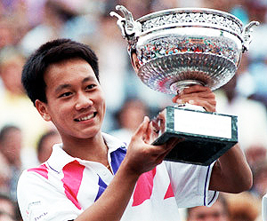

The Value of Optimism: Michael Chang¶
By Allen Fox, Ph.D.¶

Michael Chang at age 17: precocious, fast, underpowered, optimistic.
An optimistic attitude gives you tremendous advantages --on the tennis court as well as in life. It helps you maintain your drive and a productive emotional state in the face of setbacks. And it almost always means more match wins.
Pessimism, on the other hand, leads to early discouragement and defeat. But can you become optimistic if you are the type of person who naturally thinks negatively?
What if you find yourself in an obviously bad situation? Are you supposed to lie to yourself and claim it's good? No, you don't have to lie in bad situations to make them look better.
You can create an optimistic outlook, realistically and truthfully, by directing your attention towards actual positive aspects of your situation.
You always have that choice. And making the choice for optimism can produce on court results that at times seem almost unbelievable.
In the first two articles in this series, let's look at two of the most famous comeback matches in tennis history that demonstrate this point, matches that were influenced by optimism in the face of seemingly impossible circumstances.
In the first article, we'll analyze Michael Chang's shocking win at the French Open over the top player in the world, Ivan Lendl, and how that win led to a Grand Slam title.

Chang's French title at age 17: one of the most improbable wins in tennis history.
In the second article we'll look at an equally implausible victory by American Brad Gilbert over the great German champion Boris Becker at the U.S. Open.
Then in a third piece, let's give some practical examples of how to apply this type optimistic thinking to adverse situations below the pro level, situations that club players encounter on a regular basis.
Chang
Michael Chang provides an ultimate example of the surprising benefits of maintaining hope. His story was a media sensation at the time, and more than 20 years later, his come from behind 5 set victory over Lendl remains one of the most improbable wins in professional tennis history.
Michael Chang entered the 1989 French Open at 17 years of age. He was precocious, talented, fast on his feet, but small, inexperienced, and underpowered.
Seemingly, he did very well to win three matches and reach the round of 16. But now he faced the Darth Vader of the tour, Ivan Lendl, ranked #1 in the world, three-time French champion, and the most impressive and formidable tennis machine of his day.

In the round of 16, Chang's opponent was the fearsome 3 time French champion, Ivan Lendl.
Most pundits rated Chang's chances as negligible. These predictions seemed well- founded as Chang dropped the first two sets routinely, 6-4, 6-4.
Most 17-year-old players would have been well satisfied with this credible performance, especially after immediately getting down a service break in the third. To most of us, the very idea of winning the match from this position would have been incomprehensible. But not to Michael Chang.
If you had asked Chang to bet on who was likely to win the match at this stage, he might have put money on Lendl. But if you asked him if he believed he had an actual chance to come back and win, he would have answered, \"Definitely.\"
The reality was that nobody was asking him to bet on the probabilities. Possibilities were what mattered to Chang.
To keep his chances alive he only needed to have hope, keep his wits about him, and do everything in his power to perform. And perform he did.
By scrambling, then going for his shots, he broke Lendl's serve to even the score. Then he took the third set 6-3.
Then part way through the fourth set Chang's legs began to cramp. Surely this inexperienced youngster had now finally done enough, not only reaching the round of 16 at the French, but taking a set off the great Lendl.
Without his ability to run at full tilt, the under-gunned little scrambler seemed to be finished. What would be the use of fighting on with this apparently terminal disadvantage?

to see Chang's underhand serve that unnerved Ivan Lendl.
But again Chang was not being asked to risk money on an improbable bet. There was no downside for him in maintaining hope.
And so, in a stunning development, Chang began changing his tactics in a way that allowed him to compensate for his infirmity.
Michael Chang after Lendl's double fault gave him the victory.
First, he did everything he could think of to disrupt Lendl's rhythm. He slowed the match down by hitting \"moon balls\" and then surprised Lendl by going for sudden winners.
He served a surprise underhand slice to bring Lendl forward and then passed him. These ploys so unnerved Lendl that his game began to unravel.
Chang later explained, \"I was trying to break his concentration. I would've done anything to stay out there.\"
Anything to stay out there while suffering from severe cramps? Truly this was The power of hope in action.
By the fifth set Lendl had completely lost his cool and began swearing at the umpire and the partisan crowd. But still it seemed Chang's efforts would not be enough.
Chang began literally staggering from the cramps part way through the fifth set, in so much pain that he seemed at the edge of a complete physical collapse.
But still he fought on against his bewildered opponent . Against all odds he reached 5-3 in the fifth with Lendl now serving to save the match.
At match point down, Lendl missed his first serve. Then in yet another desperate psychological tactic, Chang walked up to within a foot of the service line to receive the second serve.
This was basically a suicidal position unless Lendl hit a double fault. But the tactic worked. An enraged Lendl double faulted, handing Chang the most improbable victory in the history of the French Open.

Did one incredible match lead Michael Chang to the Hall of Fame?
The normally stoical Chang fell to his knees and wept. Seven days later, he became the youngest male champion in Grand Slam history.
What was the career significance of this one superhuman display of optimism? Michael Chang went on to reach the finals of the Australian and US Opens in 1996 but was defeated in both.
And though he was ranked among the world's top ten many times, he never again won a major championship. Nor was he ever able to achieve the world's #1 ranking.
Nonetheless, Michael was elected to the International Tennis Hall of Fame. Reviewing his career, it is obvious that his lasting fame was due to his French Open victory and its improbable underdog back story.
Had Michael given up hope in that one crucial match against Lendl and allowed overwhelmingly negative circumstances to sap his emotional strength, he would have been nothing more than a minor footnote in tennis history. Instead he was enshrined with the greatest players in tennis history.
Next: Another famous match in which Brad Gilbert relied on optimism (and brilliant strategy) to make the great Boris Becker scream in anguish in defeat. Stay Tuned.
Read More From Allen!
Visit him at www.allenfoxtennis.net
|  | Tennis is mentally the most difficult sport due to it's personal nature which makes winning and losing feel more |
| important than they are. In this new book, Allen offers his proven solutions to problems such as choking, reducing | |
| stress, finishing matches, and developing confidence. Based on a life time of high level play and coaching success, | |
| it's a must for all competitive players. | |
| [ to | |
| Order](http://www.amazon.com/Tennis-Winning-Mental-Allen-Fox/dp/0615407765/ref=sr_1_1?ie=UTF8&qid=1336083459&sr=8-1). |
|  | eminently preferable to losing. In his new book, The |
| Winner's Mind, Allen lays out an original step-by-step | |
| plan for succeeding at any of life's endeavors, based on | |
| his first hand and very personal observations of the | |
| careers of both world-class tennis players and successful | |
| businessman. The bottom line is that even if you are not a | |
| born champion--and only a tiny percentage of us are--you | |
| can still use the success strategies of champions to tilt | |
| the odds in your favor. Writing with brutal honesty and dry | |
| humor, Fox lays out the common mental characteristics of | |
| winners in sports and in life. He explains the critical | |
| role of intellect over emotion. He analyzes the struggle | |
| between ambition and fear and the insidious and pervasive | |
| fear of failure that undermines so many of us. He then | |
| outline how to confront and overcome these fears in your | |
| life and career, even when they are initially subconscious. | |
| Must reading from one of the great thinkers in tennis, and | |
| a Renaissance Man in life. [ to | |
| Order](http://www.tennis-warehouse.com/descpage-MIND.html). | |
| To purchase this book you can also send a check for \$17.95 | |
| to Allen Fox, 1120 Inverness Place, San Luis Obispo, CA. | |
| 93401. The price includes shipping. |
|  | insightful analysts in modern tennis. A top 10 |
| American player from the glory days before Open | |
| tennis, Fox played many of the legendary greats, among | |
| them Roy Emerson, Rod Laver, Stan Smith, and Arthur | |
| Ashe. At Pepperdine he developed the men's tennis | |
| program into an elite contender for national titles, | |
| and gave Brad Gilbert the insights that became the | |
| foundation for \"Winning Ugly\". His book Think to Win | |
| is a modern classic. He has also starred in a series | |
| of acclaimed videos, including Pro Secrets of Match | |
| Play and Allen Fox's Ultimate Tennis Lesson. | |